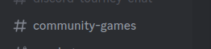
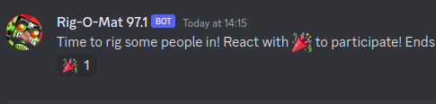
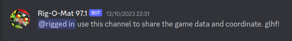

Step 1:Join the Discord
discord.gg/t90official
There is a 10-minute cooldown after you join the Discord,
during which you cannot react and therefore cannot participate in the drawing.
For this reason, it makes sense to join way in advance. There's nice people in there, too!
Step 2 Make Sure Your Game is Ready to Go
You're on the latest patch? All your mods are sorted out? Great!
Step 3 Watch the Stream
twitch.tv/t90official
Community Games usually happen on Fridays.
Step 4 React With 🎉 in #community-games

Once the Rig-O-Mat 97.1 posts in the #community-games channel,
react with 🎉 to enter the drawing.

Step 5 Get Rigged In
If you get rigged in, you receive the rigged in role and get access to #cg-chat.
There, you will receive the game ID and password to join the game.

Host
You got selected to host a community game?
Here's what you need to do.
Step 1Subscribe to the Necessary Mods
Make sure you are subscribed to the mods that include the map script
and possibly the data mod that shall be used for the game.
Some common mods:
King Boom,
Exploding Villagers,
Zetnus HyperRandom,
Zetnus Random Map Script Pack (includes Forest Nothing),
Pilgrims Nothing DE,
Random Cost Mod.
Step 2Create a Game
Make sure that Spectators are enabled and that,
if necessary, the correct data mod is selected.
Choose a simple password that cannot be easily guessed.
Step 3Configure the Game
- Select the map script. Maps from mods can be found under Map Type "Custom".
- Select the map size. Usually Large (8 Players), unless specified otherwise.
- Select the proper game mode.
- Configure diplomacy options. A free-for-all ("FFA") game has the "Fixed Teams" checkbox checked,
while a diplomacy ("diplo") game has it unchecked.
Step 4Send the Game Information to T90
Send the game ID, the password, and a screenshot of your game settings to T90 via Discord direct message.
There is a button to copy the game ID at the top right,
and you can take a screenshot by pressing Win+Shift+S.
T90 will share the game information with the selected players.
Step 5Wait For All the Players to Join
Wait for all players that have been selected to join the game.
Make sure no two players pick the same colour, and have them select the correct team.
Usually that means everybody selects no team (-).
Step 6Start the Game Already!
Have the players select "I'm Ready!" and click "Start Game". Have fun!